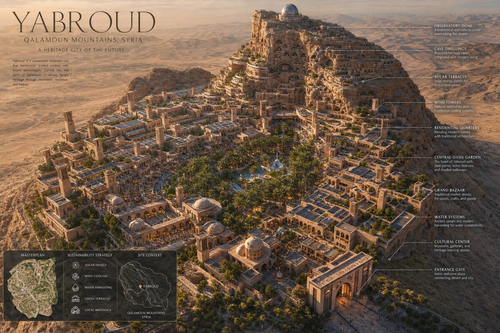
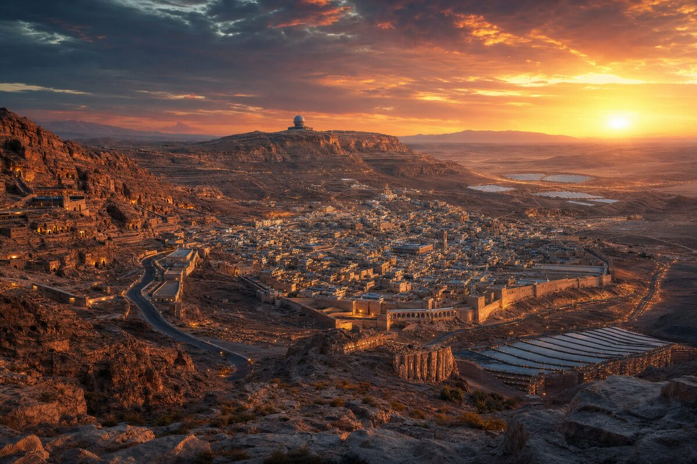
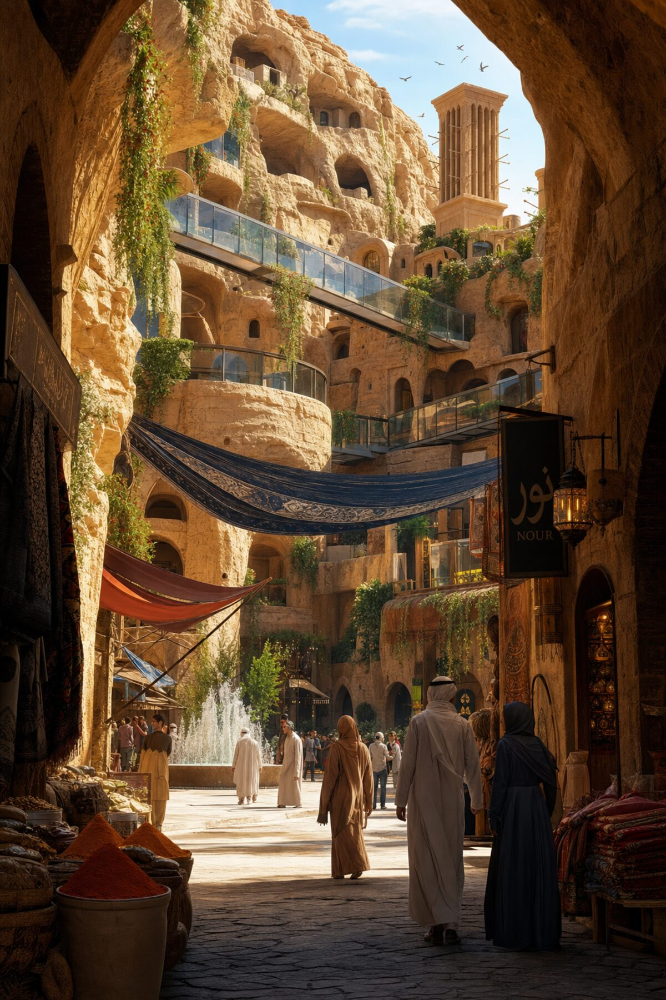
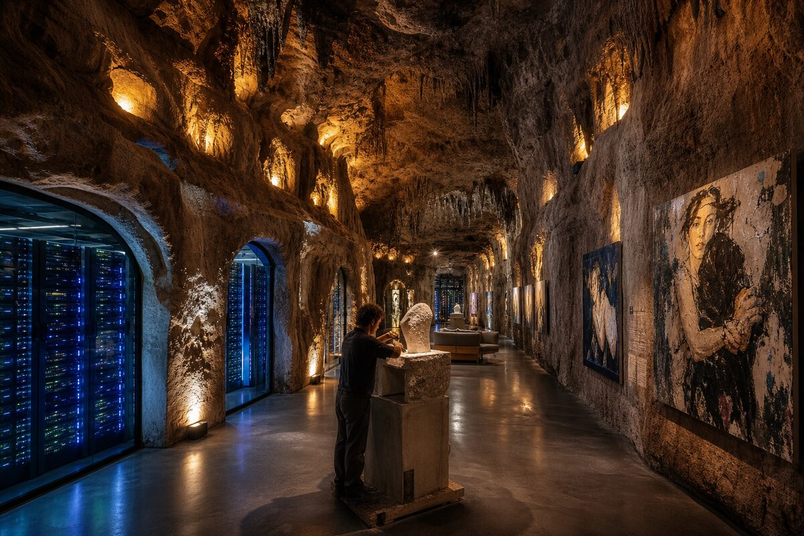
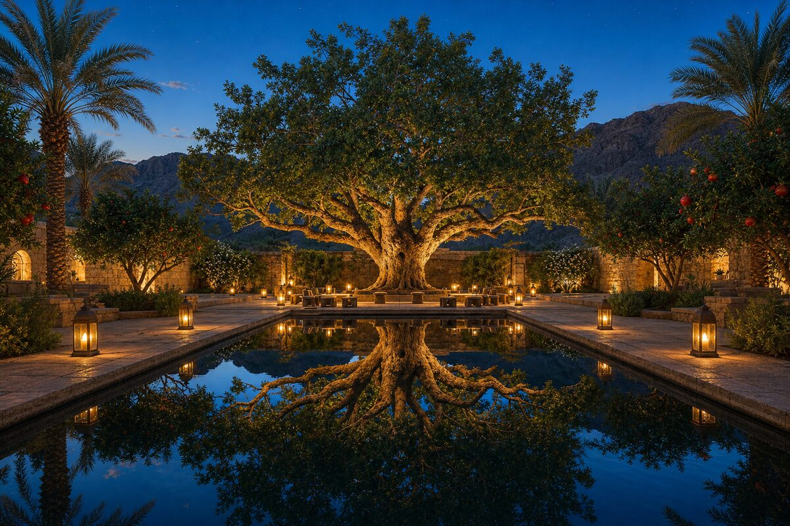
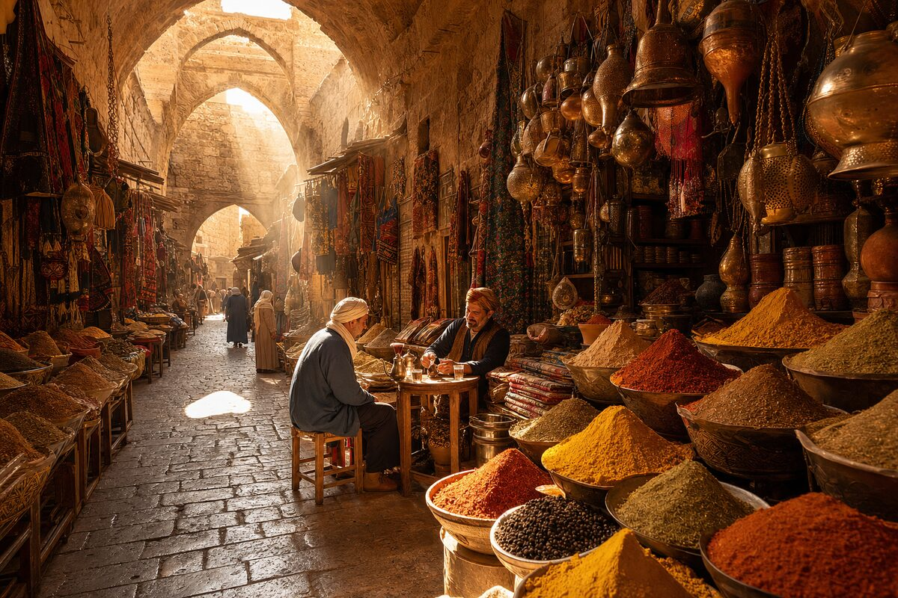
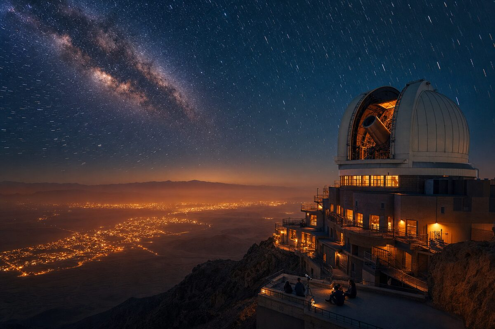
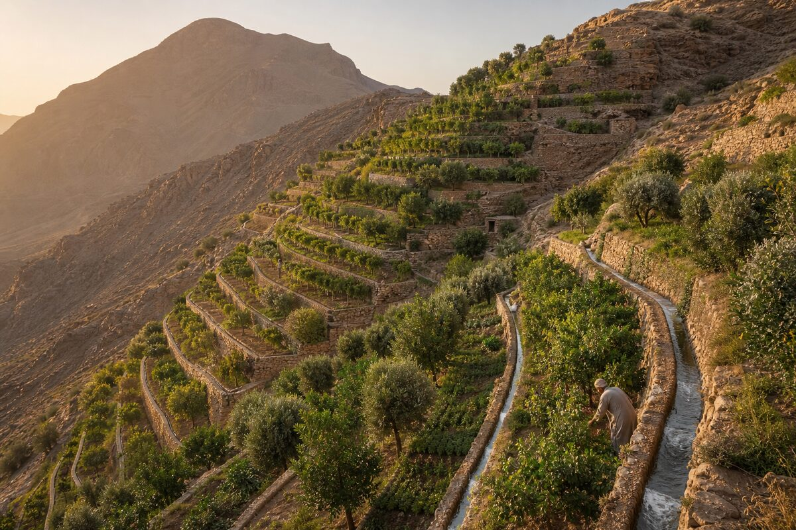
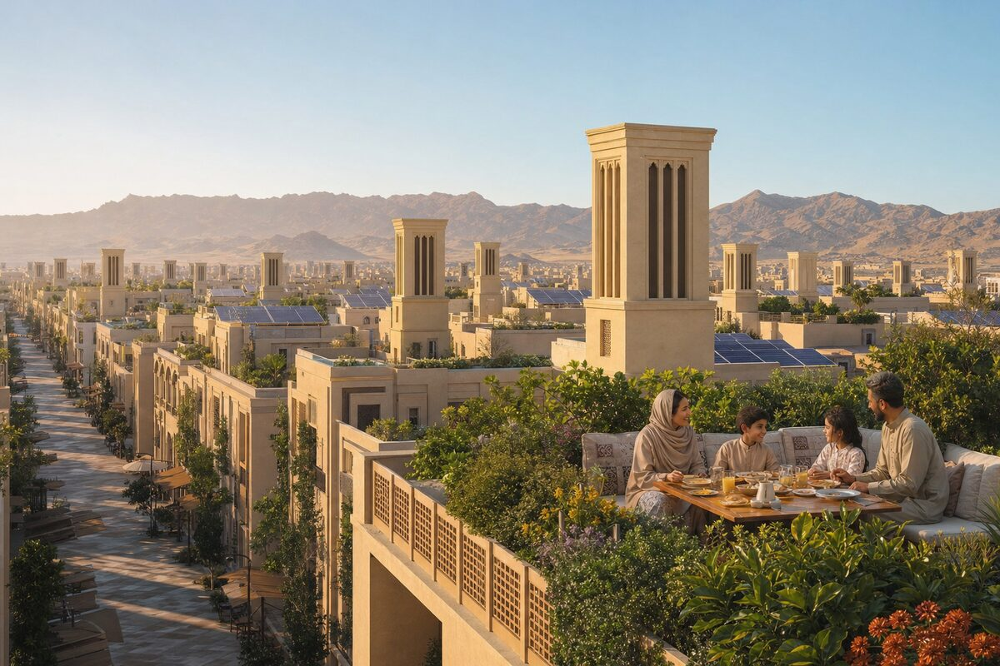

✕



Click any district to explore
The oldest continuously inhabited caves in the Levant. 50,000 years of human memory carved into sandstone. Now: artist studios, meditation halls, temperature-stable wine cellars and server rooms. The rock maintains 18°C year-round — no energy needed.

The only vehicle entry. A massive stone arch frames the desert horizon. Arriving at Yabroud is an EVENT — the gate compresses the view, then releases you into the city. Customs, welcome house, transit hub. Every visitor is received, not processed.
No one lives here. Everyone comes here. A 2-hectare garden at the geometric center — date palms, pomegranate, jasmine, a reflecting pool that mirrors the sky. The city's council meets under the ancient sycamore. No walls, no roof. Decisions made under stars.

The grand bazaar. Vaulted stone arcades run 800 meters. Cumin, za'atar, sumac, saffron — the air itself has flavor. Artisan workshops: metalwork, glass, weaving, ceramics. No chain stores. No franchise. Every stall is a family name. The economy is personal.

3,200 hours of sun per year. The plateau above the city holds 40,000 solar panels — enough for 42,000 people and surplus to sell. Battery caverns carved into rock for storage. The desert's gift, captured. Zero carbon. Zero grid. Zero dependency.
12,000 people in the densest, coolest, most alive part of Yabroud. Narrow alleyways — 2 meters wide — create permanent shade. Courtyard houses with interior gardens. Walls are thick: 60cm stone. Summer stays outside. Community ovens, shared wells, rooftop sleeping in August.
The highest point. A 15m dome houses a 1-meter reflector telescope. Zero light pollution ordinance protects the sky. Research station: astronomy, meteorology, seismology. The university's desert campus. Students live in cliff-side dormitories with balconies facing infinity.

Food grows on the mountain. 50 terraces carved into the south-facing cliff, irrigated by gravity-fed qanat channels. Olives, figs, grapes, herbs, vegetables. The city feeds itself. Surplus goes to the Spice Quarter. No imported produce. The mountain provides.

The new quarter. Modern desert architecture — every building crowned with a badgir wind tower pulling cool underground air upward. Streets oriented NW-SE to catch the prevailing Qalamoun breeze. Three-story maximum. Every rooftop is a garden or a solar collector. No exceptions.

The Paleolithic caves are not ruins. They are the city's spine. Every new structure grows FROM the rock, not on top of it. The mountain is the first architect.
Every drop is visible. Channels run open through the streets. Fountains mark crossroads. The sound of water is the city's heartbeat. Fog nets harvest dew from the Qalamoun wind.
100% solar. The plateau catches 3,200 hours of sun per year. No grid dependency. The desert gives more than it takes — if you know how to receive.
Wind towers pull cool air from underground qanat channels. No air conditioning. The wind does the work. The tower is the machine.
The Spice Quarter is not a market — it is the PROTOCOL. Every exchange is face-to-face. Every price is spoken. The algorithm is the handshake.
The city is designed for stars. Minimal light pollution. Streets glow amber — never white. The desert sky is the ceiling.
"Build nothing the mountain would reject. Plant nothing the desert would kill. The city that survives is the city that listens."— THE ARCHITECT, YABROUD CHARTER